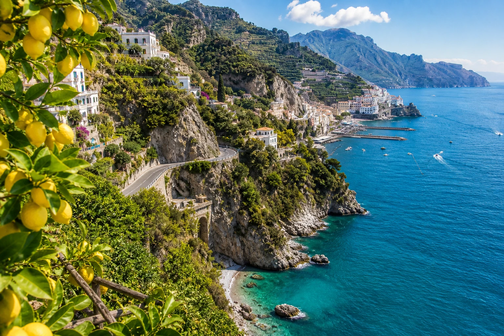

Malta · leto · koncerty
Malta · leto · koncerty
Malta v júli: koncerty, more a horúčavy
Priama linka z Bratislavy, Isle of MTV, Valletta, Comino a praktické tipy na júlové horúčavy.
Čítať článokCestovateľský blog
Tu budú pribúdať dlhšie články, cestovateľské poznámky, praktické odporúčania a osobné skúsenosti z destinácií pri Stredozemnom mori.
Malta · leto · koncerty
Priama linka z Bratislavy, Isle of MTV, Valletta, Comino a praktické tipy na júlové horúčavy.
Čítať článok AI prieskum · Pláže Stredomoria v EÚ
AI prieskum · Pláže Stredomoria v EÚ
Pozri si výber piatich výnimočných pláží v Stredomorí: Elafonissi, Balos, La Pelosa, Falassarna a Playa de Muro.
Čítať článok
Taliansko · Amalfské pobrežiePraktický sprievodca dopravou, bývaním, trajektmi, Ravellom, Cestou bohov a jednoduchým itinerárom na 3 dni.
Čítať článok